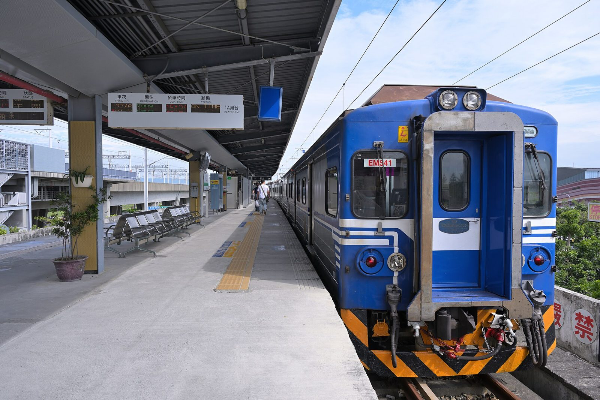

타이중 타이난 이동, 고속철보다 일반열차가 나을 때는?
고속철 구간은 40분 안팎이지만 역이 둘 다 시 외곽이에요 — 시내 역에서 시내 역으로 간다면 계산이 달라집니다.
게시
"타이중에서 타이난 갈 때 고속철을 타야 할까요, 그냥 기차를 타도 될까요?" 타이중 타이난 이동은 고속철이 당연히 빠를 것 같지만, 고속철 타이중역은 우르(烏日), 타이난역은 구이런(歸仁)에 있어 시내까지 열차를 두 번 더 타야 해요. 대만고속철도와 대만철도(臺鐵)의 공식 요금표·시각표와 교통부 TDX 공개 시각표를 바탕으로 두 방법을 2026년 10월 기준으로 비교해봤습니다.
01 · 타이중 타이난 기차, 한눈에 비교하기
| 고속철 + 환승 2번 | 대만철도 자강호(직행) | 대만철도 구간차(직행) | |
|---|---|---|---|
| 성인 편도 요금 | NT$650(자유석 NT$630) + 연결 열차 | NT$487 | NT$314 |
| 타는 시간 | 고속철 36~54분, 환승 포함 1시간 30분 안팎 | 1시간 35분~2시간 15분 | 약 3시간 |
| 갈아타기 | 신우르역·사룬역에서 2번 | 없음 | 없음 |
| 타는 곳 → 내리는 곳 | 臺中역 → 新烏日 → 고속철 → 沙崙 → 臺南역 | 臺中역 → 臺南역 | 臺中역 → 臺南역 |
| 이런 분께 | 고속철역 근처에서 출발하거나 시간이 정확해야 할 때 | 시내 역 근처 숙소끼리 이동할 때 | 급하지 않고 요금을 아끼고 싶을 때 |
요금은 대만고속철도 공식 운임표와 대만철도 공식 운임표(2025년 6월 23일 시행분) 기준이고, 2026년 10월 기준이에요. 타는 시간은 교통부 TDX 공개 시각표 기준으로, 고속철은 직행이 36분이고 정차가 많은 열차는 54분까지 걸립니다. 대만철도 직행은 하루 40편 남짓이고 가장 빠른 푸유마호가 1시간 35분이에요.
02 · 고속철로 가면 어디서 갈아탈까
타이중 쪽: 臺中역 → 新烏日역 고속철 타이중역은 대만철도 신우르(新烏日)역과 붙어 있어요. 시내 臺中역에서 신우르역까지는 구간차로 10분 남짓이라, 고속철 출발 시각보다 넉넉히 나서는 편이 좋습니다.
고속철 구간: 36~54분 표준석 NT$650, 자유석 NT$630이에요. 자유석 표는 탑승 당일 역에서만 사고, 일반 이지카드는 안 되며 자동충전을 켠 고속철 제휴 카드만 바로 찍고 탈 수 있어요.
타이난 쪽: 2층 통로로 沙崙역 고속철 타이난역 2층 통로로 대만철도 사룬(沙崙)역에 가서 사룬선 구간차를 타요. 臺南역까지 24분, 요금은 NT$37이며 낮에는 대략 20~40분 간격으로 다닙니다.
고속철역 근처가 목적지라면 고속철 타이난역에서는 치메이 박물관을 지나 시청까지 가는 H31 고속철 셔틀버스도 다녀요. 목적지가 시내 서쪽이 아니라면 이쪽이 더 편할 수 있어요.

"旅客可由高鐵台南站2樓通廊到沙崙火車站，轉乘臺鐵沙崙線往臺南、永康等站。" — 고속철 타이난역 2층 통로로 사룬역에 가서 臺南·永康 방향 사룬선으로 갈아탈 수 있다는 대만고속철도 공식 안내예요.
03 · 대만철도 자강호가 나은 경우
숙소가 臺中역·臺南역 근처 출발과 도착이 모두 시내 기차역이라면 자강호 직행이 1시간 35분~2시간 남짓으로, 환승까지 합친 고속철과 시간이 비슷하고 요금은 NT$160 넘게 싸요.
캐리어가 크거나 부모님과 함께 갈아타지 않으니 계단과 환승 통로를 오갈 일이 없어요. 짐이 많을수록 환승 2번이 생각보다 번거롭습니다.
열차 종류에 따라 시간이 달라요 같은 자강호라도 푸유마호·EMU3000은 1시간 35분~50분, 기관차가 끄는 자강호는 2시간이 넘기도 해요. 시각표에서 도착 시각을 꼭 확인하세요.
좌석은 미리 예약 주말과 연휴에는 자강호 좌석이 일찍 마감될 수 있어요. 대만철도 공식 사이트나 앱에서 미리 예약해 두면 서서 가지 않아도 됩니다.

04 · 대만철도 구간차와 그 밖의 팁
구간차는 이지카드로 바로 구간차는 예약 없이 이지카드를 찍고 타면 돼요. 직행 요금은 NT$314로 가장 싸지만 약 3시간이 걸리니 일정에 여유가 있을 때 골라 보세요.
첫차와 막차 확인 TDX 공개 시각표 기준 대만철도 臺中→臺南 직행은 05:30에 첫차, 21:46에 막차가 떠나요. 늦은 시간이라면 고속철과 사룬선 막차 시각을 같이 확인하세요.
시각표는 바뀔 수 있어요 대만철도는 수시로 열차 시각을 조정한다고 안내해요. 출발 일주일 전쯤 공식 시각표로 다시 확인하는 편이 안전합니다.
타이난에 도착해 첫 끼를 고른다면 타이난 맛집 지도와 타이난 우육면·우육탕 모음부터 보세요. 부드러운 우육탕 고기로 소개된 아차이 우육탕과 안핑의 저우스 새우롤도 지도에 있어요. 출발 전 타이중에서 들를 곳은 타이중 맛집 지도에, 타이베이에서 타이난으로 바로 가는 일정은 타이베이 타이난 3박4일 글에 정리해 두었습니다.
지도에서 타이난 우육탕도 확인해보세요
도착하는 날 먹을 곳을 미리 찜해 두면 역에서 바로 움직일 수 있어요.